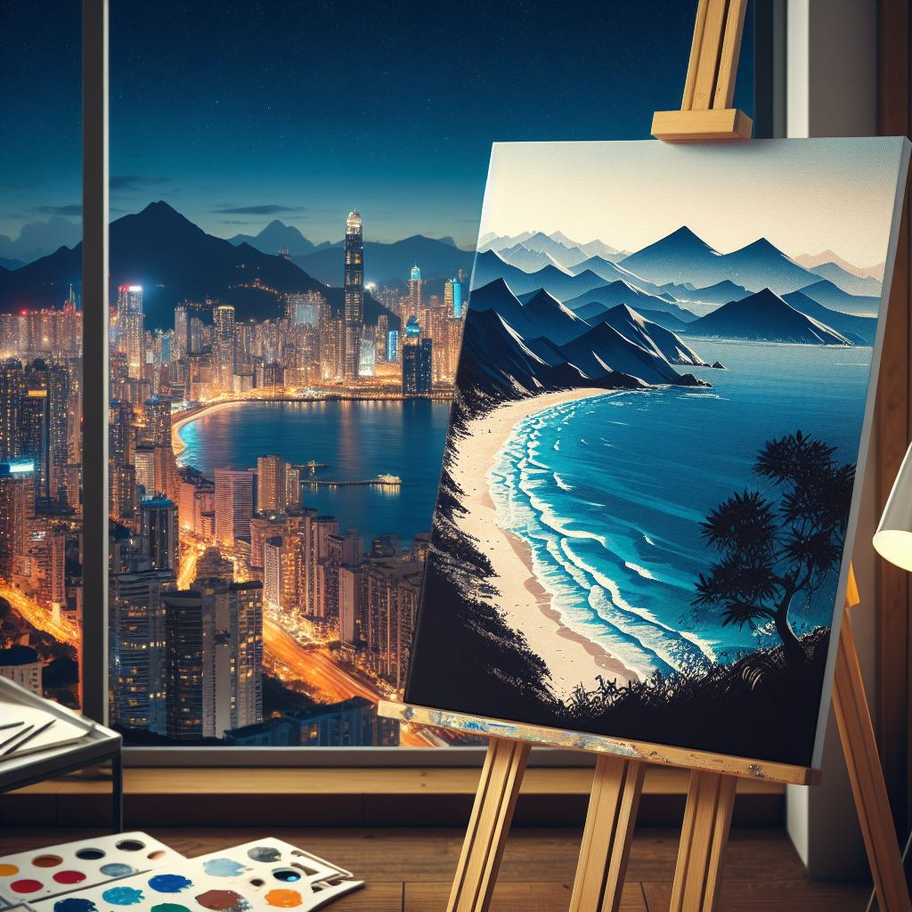

Olá, me chamo Emma Phoebe!
Com alegria, compartilho minha jornada artística como uma pintora internacionalmente reconhecida. Me trabalho são expressões vibrantes e refinadas que transcendem fronteiras, contando histórias e provocando reflexões. Exibido em galerias renomadas e honrado com prêmios, minha busca constante pela excelência reflete uma visão artística autêntica. Convido você a explorar o fascinante universo das minhas obras, onde a imaginação é libertada, unindo-nos pela beleza universal da arte.
Sobre mim
Minha trajetória artística começou na infância, onde os primeiros traços de pincel eram como passos iniciais em direção ao que se tornaria minha paixão vitalícia. Na adolescência, a pintura tornou-se uma forma de autodescoberta, um meio de expressar as complexidades da juventude. Na vida adulta, as telas se tornaram minha voz, conquistando reconhecimento internacional em galerias e prêmios. A pintura não é apenas uma prática artística, mas uma companheira constante, testemunhando meu crescimento e criando um legado visual. Convido você a explorar essa jornada através das telas que encapsulam a história de uma vida vivida através da arte. birol parela maxime infena. Excepteur sint occaecat cupidatat non
Contato
Estou disponível para colaborações, exposições e projetos que possam enriquecer ainda mais a experiência artística. Se estiver interessado em adquirir uma obra, discutir uma possível exposição ou simplesmente desejar compartilhar insights sobre arte, ficarei encantado em ouvir. Você pode entrar em contato comigo por e-mail através de emma_phoebe@artists.com ou pelo telefone (11)95555-9595. Estou aberto a propostas, oportunidades de parcerias e qualquer forma de diálogo relacionada ao mundo da arte.o